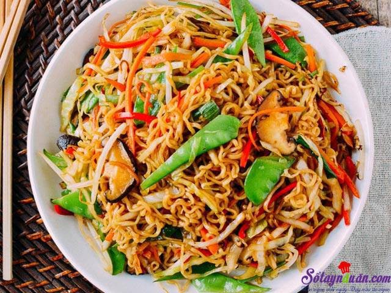

Mì

Mì sợi là một thực phẩm thường dùng trong nhiều nền văn hóa làm từ bột không men. Tất cả được kéo căng, ép đùn, hoặc cán phẳng và cắt thành một trong một loạt các hình dạng. Trong khi dạng dài, mỏng có thể là phổ biến nhất (mì sợi), nhiều loại mì được cắt thành sóng, xoắn, ống, dây, hoặc vỏ, hoặc gấp lại, hay được cắt thành hình dạng khác.
Mì sợi được làm từ bột nhão được tạo thành sợi trong ống có đục lỗ nhỏ hoặc trong túi có đáy có đục lỗ nhỏ vào nước sôi. Tùy theo loại, mì sợi có thể được phơi khô hoặc ướp lạnh trước khi nấu nướng.
Mì được nấu chín trong nước sôi. Thông thường, đôi khi với dầu ăn hoặc thêm muối. Chúng thường được chiên sơ hoặc chiên với nhiều dầu. Mì thường được phục vụ kèm theo với sốt hoặc trong một món súp. Mì có thể được bỏ tủ lạnh để bảo quản ngắn hạn, hoặc sấy khô và được lưu trữ để sử dụng trong tương lai. Các thành phần vật chất hay nguồn gốc văn hóa địa lý phải được xác định khi thảo luận về mì.